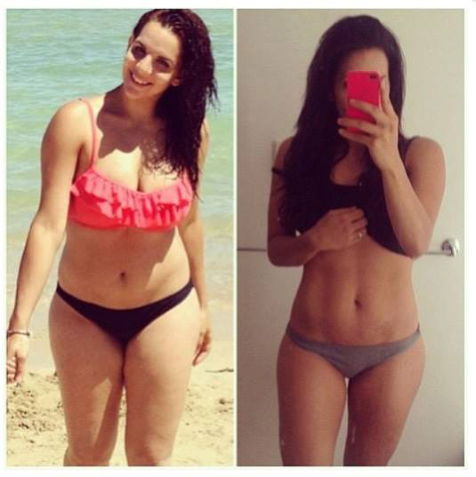

Πώς έχασα 34 κιλά
Δημοσιεύτηκε , 19:51 | Συγγραφέας: Inga

Γεια σας, εδω και πάλι εγώ η Ειρήνη! Θέλω να μοιραστώ μαζί σας τη μικρή μου νίκη πάνω από κόμπλεξ και το υπερβολικό βάρος. Η άδολη ιστορία μου - είναι η ασθένεια, το διαζύγιο με τον αγαπημένο μου σύζυγο και η επιτυχή υπέρβαση αυτών των δυσκολιών.
Θέλω να ξεκινήσω με το γεγονός ότι μετά την αποβολή πέρασα μεγάλο άγχος, και στο εξαιτίας του στρες είχα ορμονική ανισορροπία και έπεσα σε κατάθλιψη. Οταν ήμουνα σε κατάθλιψη, έτρωγα 2 φορές περισσότερο από το συνηθισμένο. Και καθώς έχω την κλίση να χοντραίνω, αμέσως άρχισα να παίρνω βάρος γρήγορα. Το αποτέλεσμα είναι λυπηρό - 92 κιλά. Ο άντρας μου στην αρχή προσπαθούσε να με υποστηρίξει, προσπάθησε να με βγάλει από την κατάθλιψη, αλλά στο τέλος απλά με παράτησε .
Μια μέρα ο σύζυγός μου μου είπε ότι δεν θέλει να έχει μια τέτοια ανεπαρκή γυναίκα, η οποία δεν μπορεί να κάνει παιδί, και εκτώς αυτού μοιάζει με χοντρή αγελάδα. - Δεν μπορείτε να φανταστείτε τι χτύπημα ήταν αυτό για μένα: ο αγαπημένος μου με ντρόπιαζε, με έκανε να νιώσω ακόμα χειρότερα, και στο τέλος απλά έκανε αίτηση διαζυγίου.
Σκεφτόμουν ακόμα και να αυτοκτονήσω, γιατί ζωή χωρίς τον αγαπημένο μου άντρα και παιδιά δεν είχε νόημα για μένα. Η φίλη μου με το ζόρι μ' έφερε στο γιατρό και αυτός με συμβούλεψε πώς να χάσω βάρος, να βελτιώσω το ορμονικό υπόβαθρο και να κάνω ένα υγιές μωρό...
Ήρθε η ώρα να πάρω τον εαυτό μου στα χεριά μου!
Τα λόγια του πρώην άντρα μου για την ανεπάρκεια μου δεν με αφήναν ήσυχη, και στέκοντας για άλλη μια φορά μπροστά στον καθρέφτη, τρόμαζα από το ογκώδες σώμα μου και από τότε αποφάσισα ότι πρέπει να αλλάξω τον εαυτό μου και να γίνω η τέλεια γυναικά.
Έτσι, λοιπόν, ξεκίνησα αμέσως την μεταμόρφωση του σώματος μου: έιχα δοκιμάσει όλα τα είδη των ασκήσεων, την γιόγκα για την απώλεια βάρους, χάπια, 25 καρέ, ακριβές κρέμες, σκληρό μασάζ κατά της κυτταρίτιδας και πολλά άλλα διαφορά ακριβά μέσα αδυνατίσματος. ΟΛΑ ΤΑ ΑΥΤΑ ΔΕΝ ΛΕΙΤΟΥΡΓΟΥΝ. Δεν με βοήθησαν καθόλου. Είναι άχρηστα.
Ήδη ήθελα να δεχτώ το γεγονός ότι το περιττό βάρος δεν υποχωρούσε, και κόλλησε στα 92 κιλά... Ήθελα να ουρλιάξω από τη ανικανότητα μου.
Σε γενικές γραμμές, παραλίγο να εγκαταλείψω αυτό το εγχείρημα "στο μακρινό συρτάρι" και να ξεχάσω γι’ αυτό.
Η απώλεια βάρους σε μικρό χρονικό διάστημα γίνεται πραγματικά;
Μια μέρα, ψάχνοντας στα blog στο διαδίκτυο, είδα ένα blog, όπου μια κοπέλα εκ θαύματος αδυνάτισε ΑΠΕΥΘΕΙΑΣ ΣΤΟ ΣΠΙΤΙ της σε ένα μήνα για 22 κιλά με τη βοήθεια κάποιου () εγώ φυσικά ενδιαφέρθηκα αμέσως και ερεύνησα όλες τις λεπτομερώς .
Στην αρχή δεν πίστεψα και πολύ στο αποτέλεσμα - είχα ήδη δοκιμάσει όλα τα είδη των χαπιών, που διαφημίζονται στην ΤΗΛΕΟΡΑΣΗ και δεν βοηθάνε….Αλλά η κοπέλα είναι αρκετά αξιόπιστη στο ιντερνέτ, εξάλλου παρουσιάζει σπουδαίες φωτογραφίες "πριν/μετά", και αποφάσισα να εμπιστεύομαι στην συμβουλή της.
Τέλος πάντων, παρήγγειλα αυτό το προϊόν (), το δέμα μου ήρθε σε λίγες μέρες με αντικαταβολή μέσω κούριερ. Τα έβγαλα όλα από το δέμα, διάβασα τις οδηγίες, και άρχισα ενεργά να το χρησιμοποιώ.
Ποιο είναι το αποτέλεσμα;
Το χρησιμοποιούσα πολύ απλά – έπαιρνα 1 κάψουλα το πρωί μέτα το φαγήτο. Για να είμαι ειλικρινής, χωρίς πολύ ενθουσιασμό αντιλαμβανόμουν αυτό το προϊόν, και δεν πίστευα ότι θα είναι αποτελεσματικό. Αλλά σιγά-σιγά άρχισα να παρατηρώ ότι οι όγκοι άρχισαν να εξαφανίζονται.
Αποφάσισα να περιμένω μια εβδομάδα και μετά ανέβηκα στη ζυγαριά και...το σαγόνι μου σχεδόν έπεσε στο πάτωμα! ΤΟ ΒΑΡΟΣ ΜΕΙΩΘΗΚΕ ΚΑΤΑ 6 ΚΙΛΑ!!! Σε 7 ημέρες! Μπορείτε να το πιστέψετε;;; Δεν πίστεψα στα μάτια μου, και ζυγιστικά ακόμη μια φορά - 6 κιλά και 200 γραμμάρια έφυγαν, όλα σωστά! Δεν έκανα λάθος και δεν έχω τρελαθεί! Δεν μπορώ να περιγράψω τη χαρά μου. Τελευταία φορά ήμουνα τόσο χαρούμενη ίσως πριν από 20 χρόνια :)
Συνέχισα να λαμβάνω το προϊόν αυτό τακτικά για 2 μήνες, και όταν ανέβηκα στη ζυγαριά την επόμενη φορά, ήμουνα απλά συγκλονισμένη -34 ΚΙΛΑ ΣΕ 2 ΜΗΝΕΣ!!! Δοκίμασα και πάλι αρκετές φορές – το βέλος στη ζυγαριά έδειχνε μόνο 58 ΚΙΛΑ!
Στη δουλειά, φυσικά, όλοι άρχισαν να παρατηρούν ότι εγώ έχανα βάρος απότομα και άρχισαν να με ρωτάνε - τι γίνεται. Ένας όμορφος εργένης συνάδελφος μου άρχισε να με προσέχει, έλεγε, ότι πάντα ζήλευε τον άντρα μου, επηδή πάντα ήμουν έξυπνη και ενδιαφέρουσα γυναικά, και τώρα έγινα ακόμα πιο όμορφη :)
Η ζωή μου στο σύνολό της μετά από αυτή την ταχεία απώλεια βάρους έχει αλλάξει. Οι άνδρες τώρα με προσέχουν όπου και αν πάω, τα κομπλιμέντα δεν έχουν τέλος από όλες τις πλευρές. Και κολυμπάω σε αυτά, στην πραγματικότητα, είναι πολύ ωραία.
Ξέρετε, επίσης σε λίγο καιρό παντρεύομαι. Ναι-ναι, με τον καλό και όμορφο συνάδελφο από τη δουλειά μου. Και όχι μόνο αυτό, αλλά ήδη είμαι έγκυος με παιδάκι μας :) Το σώμα μου, χάρη στο βάρος που έριξα ξεπέρασε την ορμονική ανισορροπία, και τώρα ετοιμάζομαι να γίνω ολοκληρωμένη γυναίκα και μητέρα σε μια ευτυχισμένη και γερή οικογένεια, όπου όλοι εκτιμούν και αγαπούν ο ένας τον άλλον!
Έτσι και συμβαίνει: με την βοήθεια του πρώην συζύγου μου, που με είχε προσβάλει και με παράτησε, ξεπέρασα την ασθένεια, την κατάθλιψη και τα περιττά κιλά, και τώρα είμαι η πιο ευτυχισμένη, αδύνατη και όμορφη γυναίκα!!!
Χαίρομαι τρελά για ό, τι έγινε. Ταυτόχρονα με αδυνάτισμα κατάλαβα ότι το πρόβλημα πολλών από εμάς είναι ότι τα πιο απλά πράγματα στη ζωή μας φαίνονται αναποτελεσματικά. Και τα πιο δύσκολα πράγματα, για παράδειγμα, όπως οι εγχειρήσεις - αποτελεσματικά. Αλλά δεν είναι έτσι. Να χάσουμε το περιττό βάρος σε μικρό χρονικό διάστημα γίνεται πραγματικότητα με το φυσικό, γρήγορο και ασφαλή τρόπο, χωρίς δίαιτες και ασκήσεις. Είναι δοκιμασμένο! Παρεμπιπτόντως, κορίτσια, το βάρος μου από τότε δεν μεγάλωσε, οι μετρήσεις μου παρέμειναν οι ιδίες :)

Οποίος ενδιαφέρεται – την παραγγελία την έκανα σε αυτή τη ιστοσελίδα. Αυτή είναι η μόνη πιστοποιημένα εταιρεία στην Ελλάδα, η οποία πουλάει το . Όσον αφορά την παράδοση, το δέμα έρχεται με αντικαταβολή μέσω κούριερ. Οπότε όλα είναι ασφαλές, και κανείς δεν θα μάθει το μικρό μυστικό σας.
Η τιμή για το αντιστοιχεί σε 2 εισιτήρια στο σινεμά ή 1 βόλτα στο μανάβικο. Αποφασίστε για τον εαυτό σας – είναι πολλά ή όχι. Η γνώμη μου είναι - τέτοιο αποτελεσματικό προϊόν θα πρέπει να πωλιέται σε διπλάσια τιμή!
Λοιπόν, ελπίζω ότι αυτή τη πληροφορία ήταν χρήσιμη για σας και, τελικά, θα έχετε το επιθυμητό μέγεθος και βάρος σε χρόνο μηδέν! Καλή τύχη σε σας!


